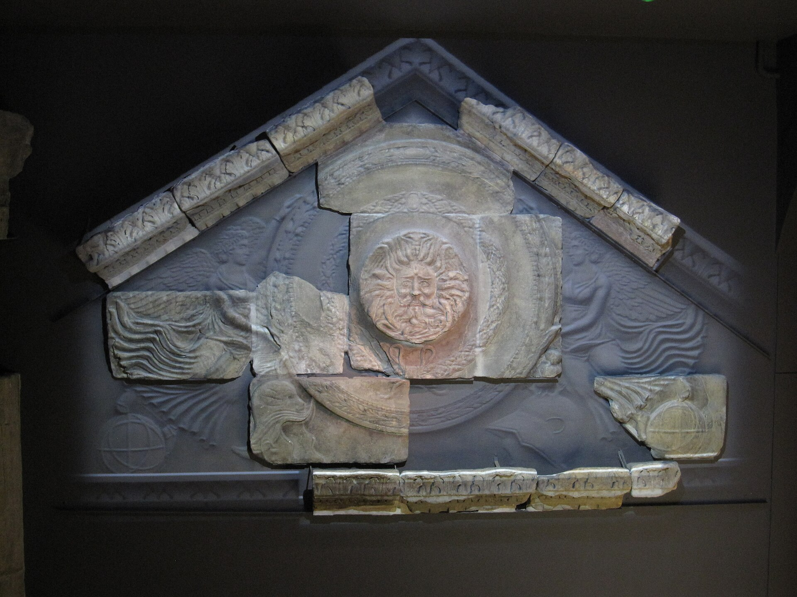
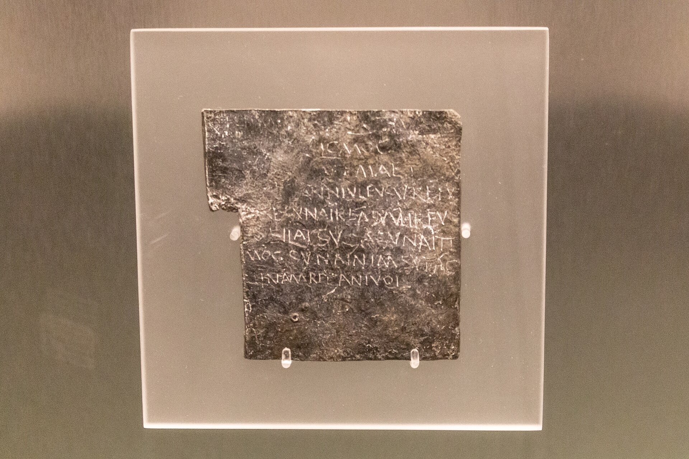
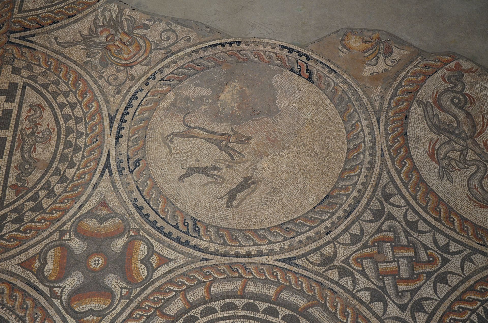

Boudiga
Rural Provincial Woman · Roman Britain

You are a native Briton born two years before the Claudian invasion. Your name is Celtic; you will never have a Roman name. You live and die as a subject of the empire without ever becoming a citizen.
Pre-conquest childhood. Your father was a minor landholder among the Dobunni, a British tribe in the Severn valley. The Dobunni were not among the fiercest resisters of Rome — they had trade contacts with the continent and some pro-Roman faction within their elite. Your earliest memories are of roundhouses, cattle, barley fields, and the oppida (hillforts) that dotted the landscape.
The Claudian invasion (43 AD) and its aftermath. You were an infant when the legions came. The Dobunni submitted relatively quickly compared to tribes further west and north. A legionary fortress was established at Glevum (Gloucester), twenty miles from your home. Roman soldiers were suddenly everywhere. Within a decade, a Roman town began growing at Corinium, which became the civitas capital — the administrative center for the former Dobunni territory. Your father paid taxes to Rome now, assessed in grain and labor.
Cultural transformation. As you grew up, the world around you changed, unevenly and incompletely. Roman roads cut through the landscape — the Fosse Way ran near your settlement. A bathhouse was built at Corinium; your father thought it was absurd, but by the time you were twenty, you used it yourself. Pottery shifted from local handmade wares to wheel-thrown Roman-style ceramics. Latin crept into daily speech, mixing with Brittonic. You learned a few dozen Latin words but never spoke it fluently.
Marriage and family. You married at fifteen, to a man from your own community named Adminios, a cattle farmer. You had six children. Three died in infancy or early childhood — an unremarkable ratio. The surviving three (two sons and a daughter) grew up in a world that was increasingly, if superficially, Romanized.
The Boudican revolt (60–61 AD). When you were eighteen, news came from the east: Boudica, queen of the Iceni, had raised a rebellion. She destroyed Camulodunum (Colchester), Londinium (London), and Verulamium (St Albans). Seventy to eighty thousand people were killed according to Roman sources (probably exaggerated). The Dobunni did not join the revolt, and the rebellion was crushed by Suetonius Paulinus at an unknown battlefield in the Midlands. But the shockwave reached you: Roman military patrols increased, the garrison at Glevum was reinforced, and there were reprisals against suspected sympathizers in neighboring tribal areas. A family in your settlement whose son had gone east to join Boudica lost their land.
The long peace. The Flavian and Trajanic periods brought relative stability to southern Britain. Corinium grew into a prosperous town with a forum, an amphitheater (small, seating perhaps 4,000), and stone-built townhouses. Your eldest son learned basic Latin and worked as a laborer on a Roman villa estate being built nearby — the economy was increasingly organized around these Romanized farming estates. Your daughter married a man who worked in the Corinium market. Your younger son herded cattle and largely ignored Rome.
Religion. You worshipped a syncretic mix: the Celtic goddess Sulis (identified by the Romans with Minerva — her great temple was at Aquae Sulis, modern Bath, a day's journey away), household spirits, and sacred groves. You visited the temple at Bath once, as a sort of pilgrimage, and threw a lead curse tablet into the sacred spring asking the goddess to punish a neighbor who had stolen two of your chickens. Dozens of such tablets have been found at Bath: "I curse the person who stole my cloak. May he not sleep until he returns it."
Death. You died around 103 AD, during Trajan's reign. You were buried in a small cemetery outside the settlement, in a crouched position following pre-Roman tradition, though your grave goods included a Roman-made pottery vessel and a bronze brooch. Southern Britain would remain part of the empire for another three centuries.


What shaped this life
The Claudian conquest, the slow and uneven process of Romanization, the Boudican revolt as a moment of crisis, the transformation of the British landscape by roads, towns, and villas, and the persistence of Celtic culture underneath a Roman administrative overlay.
The images above are real museum artifacts and photographs, or commissioned illustrations; full attribution on the credits page.